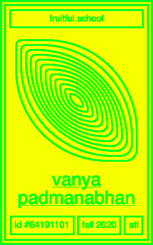

rite.house
Interview with Vanya Padmanabhan, Fall 2020 Participant
What’s it been like since launching rite.house?
It's been really interesting to watch the site grow in a natural way. I never shared it on social media, so I assume people are finding it through word of mouth at this point or through the magic that is the internet. Randomly, strangers are still finding it and still submitting rituals through the Google form. I also think the comments section of the form has been really interesting... like what strangers feel like they want to share. People have submitted book recs, recipes, poems. A few strangers have said that they came to the site at a low point in their lives and that seeing other people's rituals helped them come up with something they could be doing everyday. The fact that even one person was able to find the website and take something positive away is really special.
It's funny because I think people who have seen the site assume that I must have pretty consistent rituals in my own life. But in reality, I've always struggled to keep much of a routine (for better or worse lol). Part of me always saw the project as a way to get ideas for how to structure my own day.
Since making the site, I have become better about setting aside intentional time away from the computer — to be outside or do something with my hands — and that's been helpful.
How was Fruitful School for you?
Fruitful School was probably one of my favorite experiences in 2020 :') It made me realize how much I missed learning and also how much potential the internet has to be something special and handmade. I had built up a lot of resentment towards my computer and really anything digital (especially social media) throughout the course of the year, so I was so grateful when fruitful helped restore my curiosity online.
The course made the act of making a site feel a lot less intimidating. I think I’ve always been scared that my code would have to be “perfect” or “finished” to be published? It felt freeing to publish a bunch of “in progress” versions of the site and to recognize that any site will always be “in progress” and never finished.
What type of website would you like to encounter more?
When I was younger, I felt like I had a place online and everything was exciting. I kind of hope the future holds a cuter, more playful, and welcoming internet... one where you really want to take up digital space again. It would be nice to see websites that feel less permanent or websites that make you feel more present / more connected in genuine and unique ways.
You can also experience a walkthrough of rite.house via our video recording of the Fall 2020 live exhibition (at the 39:29 mark)!
ü•≠
Vanya Padmanabhan
